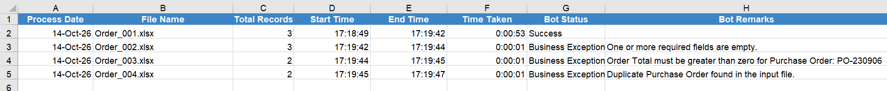

Reduce manual workload
Move repetitive, rule-based work away from your team.
Intelligent automation for business
We help businesses reduce costs, improve efficiency and create capacity through practical RPA and AI solutions—designed around the way your team actually works.
Why businesses automate
Automation is not only about speed. It creates a more consistent operation where people can focus on customers, decisions and higher-value work.
Move repetitive, rule-based work away from your team.
Apply the same validation and business rules every time.
Keep recurring work moving without unnecessary waiting.
Create capacity without adding more repetitive effort.
What we automate
Start with one clear workflow. We combine the right tools, controls and approvals for the outcome your business needs.
Move information from spreadsheets, files or emails into web, desktop or cloud systems.
Run recurring workflows at the right time without someone starting each step.
Automate the paperwork and file movement surrounding a business process.
Use AI when a workflow needs to understand or classify unstructured information.
A controlled path to automation
We translate your real workflow into a maintainable solution—with scope, testing and exceptions understood before launch.
Map the workflow, pain points, systems and business goals.
Confirm scope, rules, permissions and exception handling.
Develop the workflow and test success, failure and edge cases.
Provide operating guidance, handover and agreed initial support.
A practical automation, not just a demo
A team previously opened project files one by one, collected daily results and manually updated an Excel dashboard.

Who we are
Morée Solutions helps businesses improve operational efficiency, reduce costs and enhance productivity through Robotic Process Automation and innovative AI solutions.
Our approach is practical and results-driven: identify the business challenge, design the right workflow, and implement automation that is controlled, maintainable and useful.
Free consultation
Share your current workflow and business goal. We’ll help identify a practical AI or automation approach that can reduce cost and improve operational efficiency.